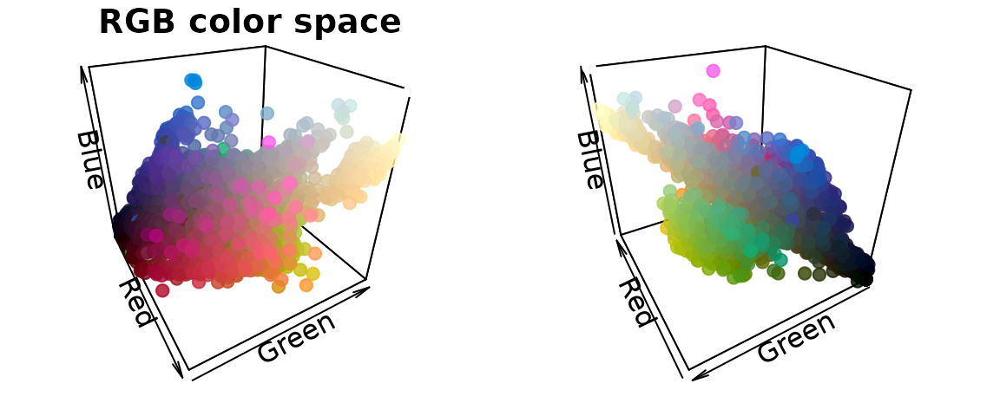
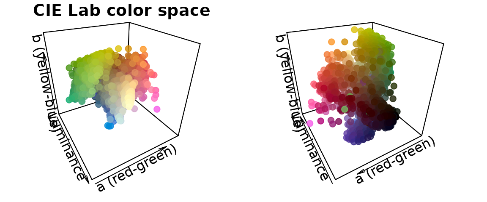
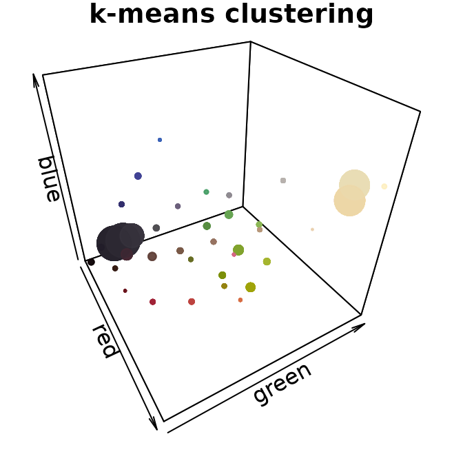
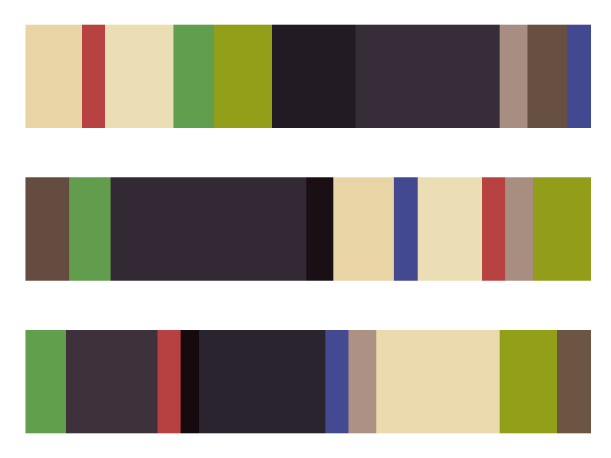
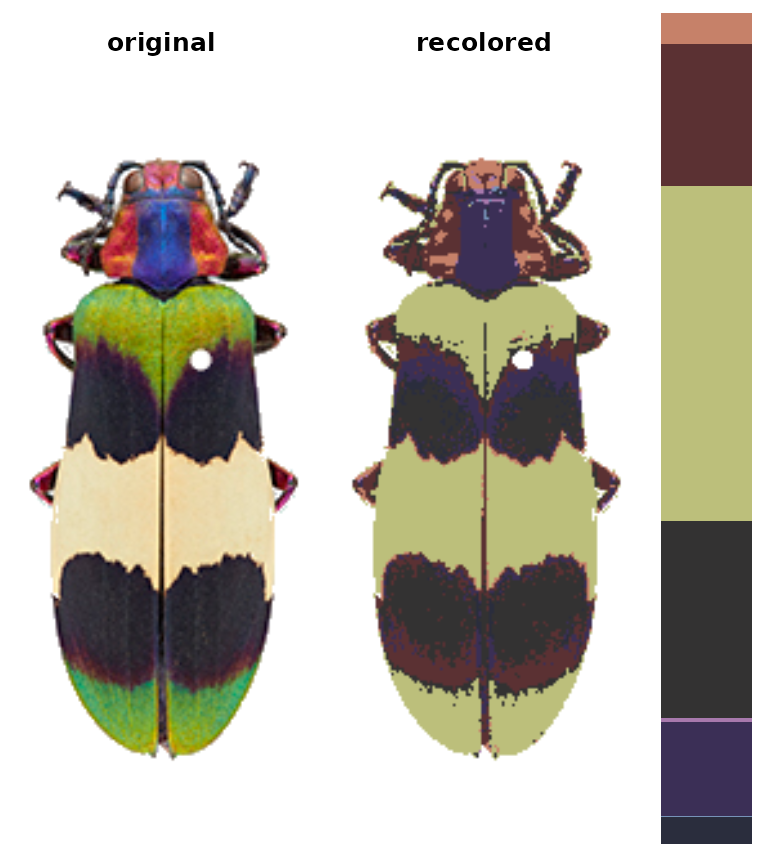
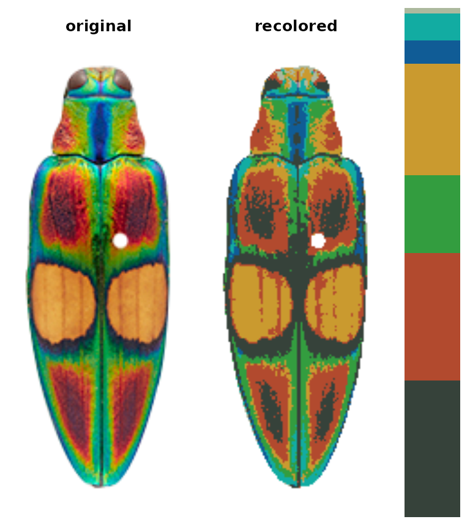
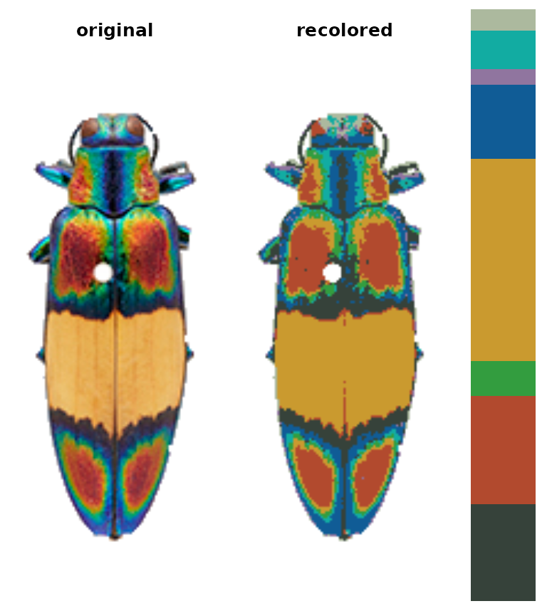

Step 2: Initial clustering
step02_initial_cluster.RmdGo from thousands of colors to a manageable number for further refinement.
-
Introduction
-
Step 0: Image acquisition and preparation
-
Step 1: Loading & processing images
- Step 2: Initial clustering
-
Step 3: Refinement
-
Step 4: Tweaks & edits
- Step 5: Visualizing & exporting output
You can also tour the functions in the function gallery.
The color clustering in recolorize usually starts with an initial clustering step which produces more color clusters than the final color map will have, which are then edited and combined to form the final color map. We start with an over-clustering step because it is a quick way to go from an overwhelming number of colors (\(256^3\) unique RGB colors) to a manageable number that can be manually inspected or automatically re-clustered. You’ll usually do this using the recolorize function, which is the core of the package (go figure!):
library(recolorize)
# get path to image
corbetti <- system.file("extdata/corbetti.png", package = "recolorize")
# cluster using defaults
recolorize_defaults <- recolorize(img = corbetti)
#>
#> Using 2^3 = 8 total bins
This function does a lot under the hood: we read in the image as an array, indexed the background, binned every pixel in the image into one of eight bins in RGB color space, calculated the average color of all the pixels assigned to a given bin, recolored the image to show which pixel was assigned to which color center, and returned all of that information in the recolorize_defaults object. A good understanding of this function and the effects of the different options will help you manipulate it for your needs, so I’ll briefly explain how it works.
The recolorize function
The main recolorize function has a simple goal: to take your image from a huge number of colors to a manageable number of color clusters. This falls under a category of methods for color quantization, although we have a slightly different goal here. The typical reason for doing color quantization is to simplify an image while making it look as visually similar as possible to the original; our goal is not to represent the original image, but to create a set of building blocks to combine and clean up so we can refer to whole color patches easily.
If you look at the documentation for the recolorize function, you’ll see a lot of user-specifiable parameters. There are only really 3 major ones:
- the color space in which the clustering is done (
color_space) - the clustering method (the
methodargument) - the number of color clusters (
binsformethod = histandnformethod = kmeans)
You can also map an image to an externally imposed set of colors using another function, imposeColors, which can be useful for batch processing images.
We’ll go over each of these parameters and what they do. I’ll give mild advice about how to navigate these options, but there’s a reason I’ve included all of theme here, which is that I think any combination of these parameters can be useful depending on the context.
Color spaces
Color spaces are ways to represent colors as points in multi-dimensional spaces, where each axis corresponds to some aspect of the color. You’re probably familiar with RGB (red-green-blue) color space and HSV (hue-saturation-value) color space. In RGB space, colors vary by the amount of red, green, and blue they have, where a coordinate of [0, 0, 1] would be pure blue (no red or green), [1, 1, 1] would be white, [0, 1, 1] would be cyan, etc. This is how most images are stored and displayed on computers, although it’s not always very intuitive.
The recolorize package gives you a variety of options for color spaces, but by far the two most commonly used are RGB (color_space = sRGB) and CIE Lab (color_space = Lab). CIE Lab is popular because it approximates perceptual uniformity, which means that the distances between colors in CIE Lab space are proportional to how different they actually seem to human beings. The axes represent luminance (L, 0 = black and 100 = white), red-green (a, negative values = more green and positive values = more red), and blue-yellow (b, negative values = more blue and positive values = more yellow). The idea is that something can be greenish-blue, or reddish-yellow, but not reddish-green, etc. This can be a little confusing, but the results it provides are really intuitive. For example, in RGB space, red is as similar to yellow as it is to black. In CIE Lab, red and yellow are close together, and are about equally far from black.
I’ve written in more detail about color spaces for another package here, which I would recommend reading for a more detailed overview, but let’s see what happens if we plot all of the non-background pixels from our C. corbetti example in RGB compared to CIE Lab color space (forgive the crummy plotting):
#> Warning: no DISPLAY variable so Tk is not available
We can identify green, red, blue, black, and white pixels in both sets of plots, but their distributions are very different.
In practice, I find myself toggling between these two color spaces depending on the color distributions in my images. For example, when dealing with C. corbetti, I would use RGB, because the beetle is literally red, green, and blue. When dealing with the red and green C. fulgidissima above, I found that CIE Lab produced better results, because it separates red and green pixels by much more distance. But in general, especially as you increase the number of initial clusters, this matters less at this stage than at the refinement stage (where you can switch between color spaces again). Because CIE Lab is not evenly distributed on all axes (i.e. is not a cube), you may need to use more bins in CIE Lab space than in RGB. (Try fitting the C. corbetti image with CIE Lab space and see what happens for an idea of how much the choice of color space can matter.)
Clustering methods
The two clustering methods in recolorize are color histogram binning (fast, consistent, and deterministic) and k-means clustering (comparatively slower and heuristic, but more intuitive). The bins argument is accessed by the histogram method, and n goes with the kmeans method. I highly recommend the histogram binning unless you have a good reason not to use it, but there are good reasons to use k-means clustering sometimes.
The histogram binning method is essentially just a 3-dimensional color histogram: we divide up each channel of a color space into a predetermined number of bins, then count the number of pixels that fall into that bin and calculate their average color. So, when we divide each of 3 color channels into 2 bins, we end up with \(2^3 = 8\) total bins (which is why setting bins = 2 will produce 8 colors as above).
k-means clustering, on the other hand, is a well-known method for partitioning data into n clusters. You just provide the number of clusters you want, and it will try to find the best locations for them, where ‘best’ means minimizing the squared Euclidean distances between pixels and color centers within each cluster.
To appreciate these differences, we can fit the same number of colors (27) using the histogram method and the k-means method on the same image, then view the resulting color distributions:
# fit 64 colors, both ways
r_hist <- recolorize(corbetti, method = "hist", bins = 3, plotting = FALSE)
#>
#> Using 3^3 = 27 total bins
r_k <- recolorize(corbetti, method = "k", n = 37, plotting = FALSE)
par(mar = rep(1, 4))
plotColorClusters(r_hist$centers, r_hist$sizes, scaling = 30,
plus = .05,
xlab = "red", ylab = "green", zlab = "blue",
main = "Histogram method",
xlim = 0:1, ylim = 0:1, zlim = 0:1)
plotColorClusters(r_k$centers, r_k$sizes, scaling = 30,
plus = .05,
xlab = "red", ylab = "green", zlab = "blue",
main = "k-means clustering",
xlim = 0:1, ylim = 0:1, zlim = 0:1)
The histogram method produced a lot of tiny, nearly-empty clusters that are evenly distributed in the color space, with only a few large clusters (like the black and white ones). The k-means clustering method, on the other hand, produced a lot more medium-sized clusters, as well as splitting the black and white patches across multiple clusters.
A lot of color segmentation tools will only use k-means clustering (or a similar method), because it’s relatively easy to implement and does produce good results if your images have clear color boundaries and very different colors (i.e. the pixels are far apart in color space). If you were going to stop at the initial clustering step, this would probably be a better option than the histogram binning for that reason. The main reason I recommend against it is that it is not deterministic: you will get different colors, and in a different order, every time you run it. For example, if we fit 10 colors three separate times, we get the following color palettes:
k_list <- lapply(1:3, function(i) recolorize(corbetti, "k", n = 10, plotting = F))
layout(1:3)
par(mar = rep(1, 4))
plotColorPalette(k_list[[1]]$centers, k_list[[1]]$sizes)
plotColorPalette(k_list[[2]]$centers, k_list[[2]]$sizes)
plotColorPalette(k_list[[3]]$centers, k_list[[3]]$sizes)
The colors are similar, but not identical, and they are returned in an arbitrary order. If you run this code one day and pull out all the red clusters by their index, or merge the multiple green clusters, those values will change the next time you run the code. That and the need to specify cluster numbers for each image are more or less why I recommend not using this method unless you have a reason.
Binning the colors (histograms) is usually more viable as a first step. It’s quite fast, since we’re not really doing any clustering; the bins we assign the pixels to will be the same for every image, and we’re not calculating the distances between the pixels and their assigned color. It’s also deterministic, which means you get the same result every single time you run it. The downside is that makes this approach almost guaranteed to over-split colors, since your color regions will rarely fall cleanly within the boundaries of these bins, and many of the bins you end up with will be empty or have very few pixels.
Number of clusters
Unlike the color space and binning method, this parameter is pretty intuitive: the more clusters you fit, the more the colors in your image will be split up. It’s convenient to use the same scheme for every image in your dataset, so you might end up using whatever values are needed for your most complex image and over-splitting most of your other images. That’s usually fine, because the next set of steps will try to lump colors together or remove minor details. You want to be just granular enough to capture the details you care about, and it’s okay if some colors are split up.
One thing to note is that the bins argument allows for a different number of bins for each channel. Setting bins = 2 will divide each channel into 2 bins, but you can also set bins = c(5, 2, 2) to divide up the red channel into 5 bins and the blue and green channels into 2 bins (if in RGB space). This can be convenient if you have a lot of color diversity on only one axis, e.g. you have photographs of mammals which are shades of reddish-brown, and don’t need to waste computational time dividing up the blue channel.
# we can go from an unacceptable to an acceptable color map in
# CIE Lab space by adding a single additional bin in the luminance channel:
r_hist_2 <- recolorize(corbetti, method = "hist", color_space = "Lab",
bins = 2)
#>
#> Using 2^3 = 8 total bins
r_hist_322 <- recolorize(corbetti,
method = "hist",
bins = c(3, 2, 2))
#>
#> Using 3*2*2 = 12 bins
imposeColors()
Another option is to impose colors on an image, rather than using intrinsic image colors. Every pixel is assigned to the color it is closest to in some specified color space. Usually, this is useful for batch processing: you get colors from one image, then map them onto another image, so that the color centers correspond across all your images in the same order.
im1 <- system.file("extdata/ocellata.png", package = "recolorize")
im2 <- system.file("extdata/ephippigera.png", package = "recolorize")
# fit the first image
fit1 <- recolorize(im1)
#>
#> Using 2^3 = 8 total bins
# fit the second image using colors from the first
# adjust_centers = TRUE would find the average color of all the pixels assigned to
# the imposed colors to better match the raw image
fit2 <- imposeColors(im2, fit1$centers, adjust_centers = FALSE)
I would really only recommend using this if you’ve gotten your color centers from another image, but I mention it here because the function takes unclustered images.